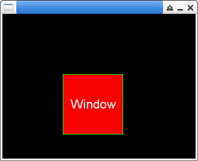

參考資訊：
https://github.com/piyushpandey013/ucGUI
https://github.com/yongzhena/ucgui-linux
main.c
#include "GUI.h"
#include "WM.h"
static void WndProc(WM_MESSAGE* pMsg)
{
int x = 0;
int y = 0;
GUI_RECT rt = { 0 };
switch (pMsg->MsgId) {
case WM_PAINT:
WM_GetInsideRect(&rt);
GUI_SetBkColor(GUI_RED);
GUI_SetColor(GUI_GREEN);
GUI_ClearRectEx(&rt);
GUI_DrawRectEx(&rt);
GUI_SetColor(GUI_WHITE);
GUI_SetFont(&GUI_Font24_ASCII);
x = WM_GetWindowSizeX(pMsg->hWin);
y = WM_GetWindowSizeY(pMsg->hWin);
GUI_DispStringHCenterAt("Window", x / 2, (y / 2) - 12);
break;
default:
WM_DefaultProc(pMsg);
}
}
int main(int argc, char *argv[])
{
WM_HWIN hWin = 0;
GUI_Init();
hWin = WM_CreateWindow(100, 100, 100, 100, WM_CF_SHOW | WM_CF_MEMDEV, WndProc, 0);
GUI_Delay(1000);
WM_DeleteWindow(hWin);
GUI_Delay(3000);
return 0;
}
編譯、執行
$ gcc main.c -o main libucgui.a -IGUI_X -IGUI/Core -IGUI/Widget -IGUI/WM -lSDL $ ./main
